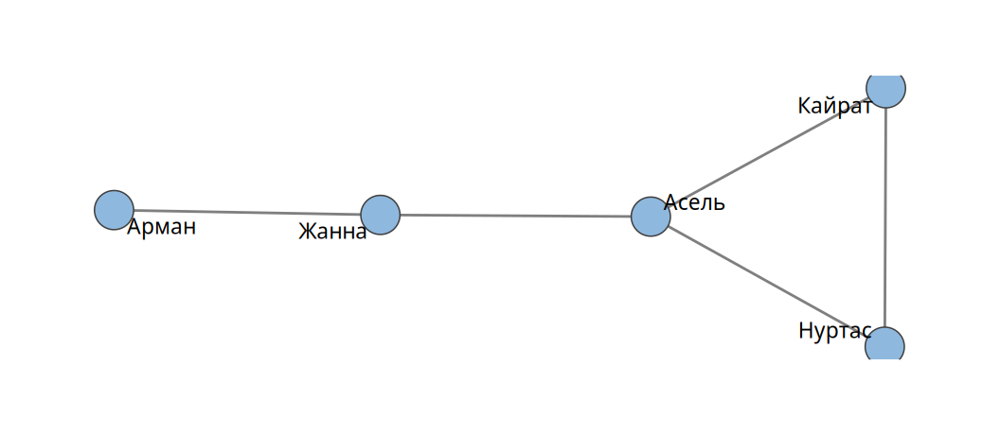
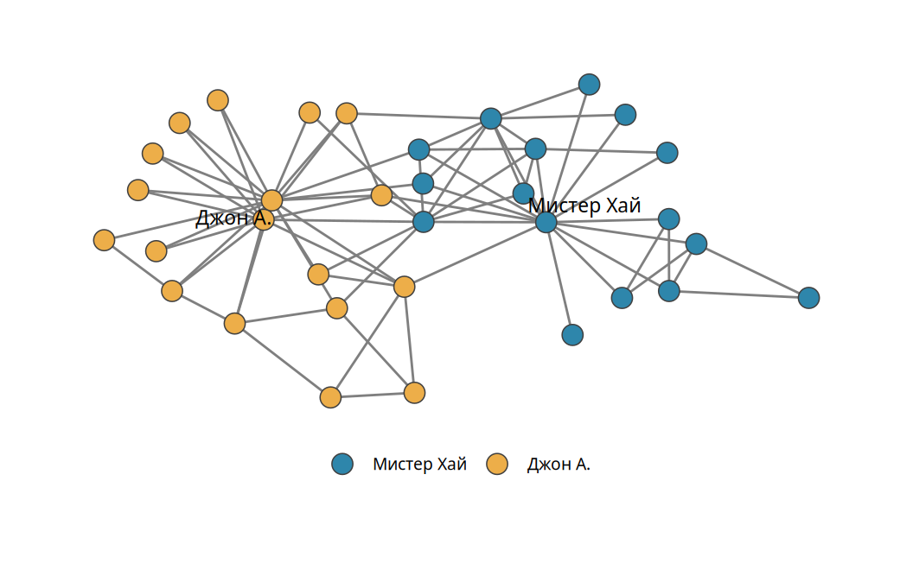
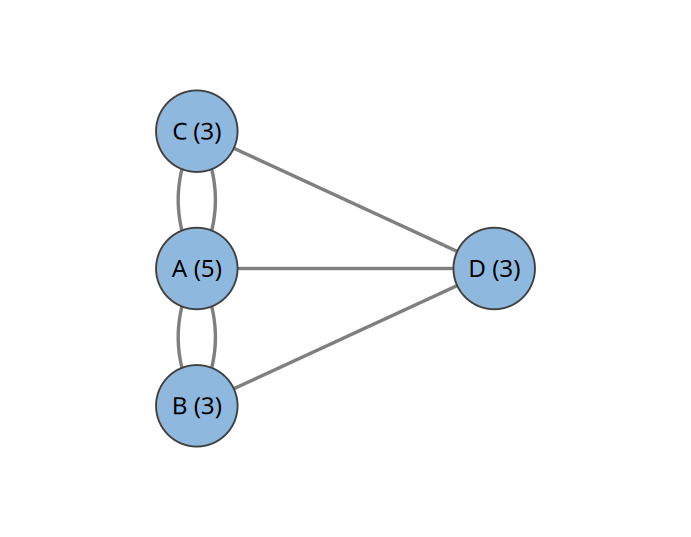
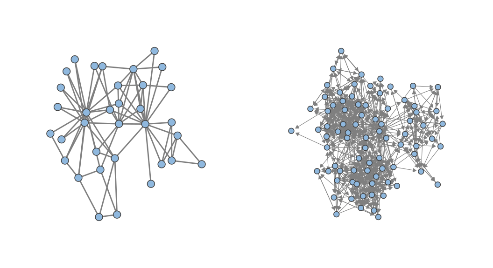
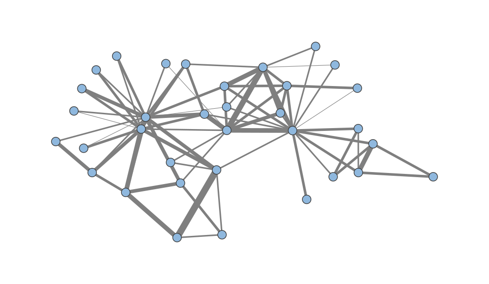
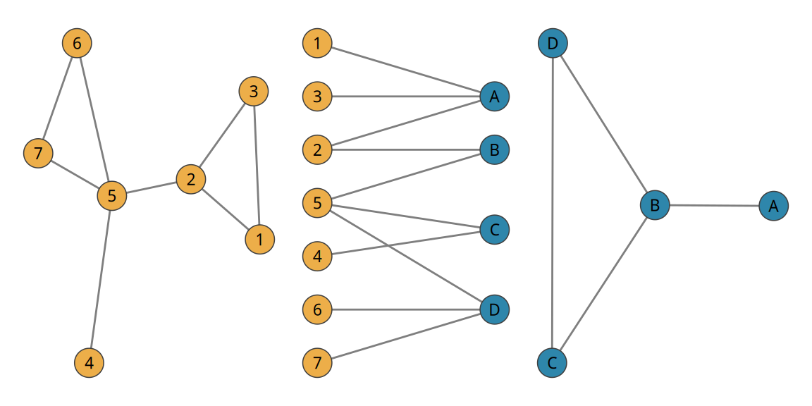

1 Сети и графы
Эта глава вводит основной объект книги. Мы начнём с житейского представления о социальной сети и постепенно придём к её строгой записи на языке теории графов. Затем разберём, какими бывают сети: направленными и ненаправленными, бинарными и взвешенными, однодольными и двудольными. Этих различий достаточно, чтобы описать почти любую сеть, с которой работает социолог.
1.2 Сети вокруг нас и теория графов
Та же логика применима не только к людям. Электрическая сеть состоит из электростанций и городов, соединённых линиями передач. Компьютерная сеть состоит из компьютеров, соединённых проводами. Транспортную сеть города можно представить как множество остановок, между которыми ходят автобусы. Фирмы заключают друг с другом контракты на поставку товаров. Список легко продолжить.
У всех этих примеров общая структура. Есть множество объектов. Есть множество связей между объектами. Каждую связь можно записать как пару объектов: «Кайрат, Нуртас» для дружбы или «Астана, Павлодар» для прямого железнодорожного сообщения. Общая структура даёт общий язык. На этом языке можно говорить о дружбе школьников и о железных дорогах одними и теми же словами. Он позволяет увидеть общие черты очень разных систем либо понять, чем именно они различаются.
Этот язык называется теорией графов. Граф представляет собой множество точек, соединённых множеством линий. В книге мы возьмём из теории графов ровно то, что нужно для описания сетей: понятия, обозначения и несколько простых результатов.
1.2.1 Узлы и связи
Объекты, из которых состоит сеть, мы будем называть узлами (nodes). В теории графов их называют вершинами (vertices). В социологии их часто называют акторами (actors), подчёркивая, что это сущности, способные действовать. Узел играет ту же роль, что наблюдение в классической статистике: это единица анализа. Если нас интересуют люди, узлами будут люди. Если нас интересуют международные отношения, узлами будут государства. Узлами могут быть также организации, города, компьютеры или белки.
Отношение между двумя узлами мы будем называть связью (tie). В литературе встречаются синонимы: ребро (edge), дуга (arc), звено (link).
ЗаметкаОпределение
Граф \(G = (V, E)\) задаётся множеством узлов \(V\) и множеством связей \(E\). Каждая связь представляет собой пару узлов \((i, j)\).
Обозначения происходят от английских слов vertex (вершина) и edge (ребро). Сеть «Кайрат и Нуртас» содержит пять узлов \(V = \{\text{Кайрат}, \text{Нуртас}, \text{Асель}, \text{Жанна}, \text{Арман}\}\) и пять связей.
Запись \(G = (V, E)\) читается так: граф \(G\) состоит из двух частей, множества узлов \(V\) и множества связей \(E\). Фигурные скобки перечисляют элементы множества, как в записи множества \(V\) выше. Круглые скобки в записи \((i, j)\) обозначают пару: связь соединяет узел \(i\) с узлом \(j\).
Связи можно приписать число. Удобно описать отношение функцией \(w\), которая каждой паре узлов ставит в соответствие значение. В простейшем случае отношение бинарно: связь либо есть, либо её нет. Тогда \(w: V \times V \to \{0, 1\}\). Два человека либо друзья, либо нет. Бывают отношения с градациями. Число писем, которые один сотрудник отправил другому за месяц, является целым неотрицательным числом: \(w: V \times V \to \mathbb{Z}_{\geq 0}\). В самом общем случае значение может быть любым вещественным числом: \(w: V \times V \to \mathbb{R}\).
Такие записи читаются слева направо. Запись \(w: V \times V \to \{0, 1\}\) означает, что функция \(w\) берёт пару узлов и возвращает 0 или 1. Знак \(\times\) между двумя \(V\) говорит, что на вход подаётся пара: первый узел из \(V\), второй тоже из \(V\). Стрелка указывает, какие значения функция может выдать. Буквой \(\mathbb{Z}_{\geq 0}\) обозначают целые неотрицательные числа 0, 1, 2, 3 и т. д. Буквой \(\mathbb{R}\) обозначают все вещественные числа, в том числе дробные.
1.2.2 Карате-клуб Закари
В 1970-х годах американский антрополог Уэйн Закари наблюдал за отношениями в университетском карате-клубе (Zachary 1977 г.). Эта сеть стала классической. На рис. 1.2 показаны 34 члена клуба и 78 связей между ними. Прежде чем читать её историю, полезно присмотреться к самой структуре.

Бросаются в глаза три особенности. Во-первых, связи распределены неравномерно. У двух членов клуба 16 и 17 связей, а у многих других всего одна или две. Сосредоточенность связей вокруг немногих узлов называют централизацией. Во-вторых, сеть распадается на две группы. Внутри групп связей много, между группами мало. У централизации здесь два центра. В-третьих, у нескольких человек есть связи в обеих группах. Они играют роль посредников.
Такую картину могли бы породить разные ситуации. Например, организация из двух отделов, в каждом из которых сотрудники общаются со своим начальником и друг с другом. Или клуб с двумя тренерами, у каждого из которых свои ученики. На самом деле в клубе произошёл конфликт между президентом (в работе Закари он назван Джоном А.) и главным тренером (Мистером Хаем). Клуб раскололся на два. Каждый член клуба выбрал одну из сторон. Слабые связи между группами отражают этот выбор: общение с «чужой» стороной могло восприниматься как нелояльность.
Данные почти всегда совместимы с несколькими объяснениями. Пример показывает главное: структура отношений в сообществе многое говорит о социальных процессах внутри него. На этой идее построена вся книга.
1.2.3 Мосты Кёнигсберга
О большинстве математических теорий нельзя сказать, где и когда они появились. Теория графов составляет исключение. Кёнигсберг (ныне Калининград) был богатым торговым городом Восточной Пруссии. Река Прегель делила его на два берега и два острова. Участки суши соединяли семь мостов. Горожане спрашивали: можно ли прогуляться по городу так, чтобы пройти по каждому мосту ровно один раз?
В 1735 году Леонард Эйлер доказал, что такого маршрута нет (Euler 1741 г.). Для этого он отбросил всё несущественное: форму берегов, длину мостов, улицы. Каждый участок суши он заменил точкой, каждый мост заменил линией (рис. 1.3). Между двумя точками здесь бывает несколько линий. Граф с такими кратными связями называют мультиграфом.

Аргумент Эйлера прост. Пусть путник проходит через участок суши, не начиная и не заканчивая на нём маршрут. Тогда он входит на участок по одному мосту и уходит по другому. Каждый визит расходует два моста. Значит, у всех участков, кроме начального и конечного, число мостов должно быть чётным. В Кёнигсберге нечётное число мостов у всех четырёх участков: 5, 3, 3 и 3. Следовательно, маршрута нет. Число связей у узла называют его степенью. Это понятие станет главным в главе 2.
1.3 Способы записи сетей
Маленькую сеть можно нарисовать. Сеть из тысячи узлов рисовать долго, а прочитать такой рисунок невозможно. Нужен формальный способ записи, понятный компьютеру и другому исследователю. Основных способов два.
Первый способ называется списком связей (edgelist). Это таблица из двух столбцов, в которой каждая строка соответствует одной связи (табл. 1.1). В ненаправленной сети порядок узлов в строке не важен: строка «Кайрат, Нуртас» означает то же, что «Нуртас, Кайрат». Список связей компактен. Его удобно хранить и передавать. Большинство программ для анализа сетей читает именно его.
| from | to |
|---|---|
| Кайрат | Нуртас |
| Кайрат | Асель |
| Нуртас | Асель |
| Асель | Жанна |
| Жанна | Арман |
Второй способ называется матрицей смежности (adjacency matrix). Для сети из \(N\) узлов это квадратная таблица из \(N\) строк и \(N\) столбцов. Строки и столбцы соответствуют узлам. Элемент матрицы \(a_{ij}\) стоит на пересечении строки \(i\) и столбца \(j\):
\[ a_{ij} = \begin{cases} 1, & \text{если между узлами } i \text{ и } j \text{ есть связь},\\ 0, & \text{если связи нет}. \end{cases} \tag{1.1}\]
Фигурная скобка в этой формуле перечисляет возможные случаи. Элемент \(a_{ij}\) равен единице, если узлы \(i\) и \(j\) связаны. В противном случае он равен нулю. Нижние индексы задают адрес элемента: первый индекс означает номер строки, второй означает номер столбца. Например, \(a_{13}\) стоит в первой строке и третьем столбце. Если узлы перечислены в порядке Кайрат, Нуртас, Асель, Жанна, Арман, то \(a_{13} = 1\), потому что Кайрат дружит с Асель. Элемент \(a_{15} = 0\): Кайрат с Арманом не связан.
| Кайрат | Нуртас | Асель | Жанна | Арман | |
|---|---|---|---|---|---|
| Кайрат | 0 | 1 | 1 | 0 | 0 |
| Нуртас | 1 | 0 | 1 | 0 | 0 |
| Асель | 1 | 1 | 0 | 1 | 0 |
| Жанна | 0 | 0 | 1 | 0 | 1 |
| Арман | 0 | 0 | 0 | 1 | 0 |
Матрица в табл. 1.2 содержит ту же информацию, что список связей. На главной диагонали стоят нули: связи узла с самим собой (петли) мы не рассматриваем. Преимущество матрицы в том, что к ней применим аппарат линейной алгебры. В главе 2 мы увидим, как с его помощью считать степени узлов.
1.4 Направленные и взвешенные сети
1.4.1 Направленные сети
Некоторые отношения симметричны по своей природе. Если Кайрат работает вместе с Нуртасом, то Нуртас работает вместе с Кайратом. Если Асель приходится родственницей Жанне, то Жанна приходится родственницей Асель. Другие отношения имеют направление. У письма есть отправитель и получатель. Дружба на первый взгляд симметрична, однако в школьных опросах дружеские номинации часто оказываются невзаимными. Асель может назвать Кайрата другом, тогда как Кайрат Асель другом не назовёт.
ЗаметкаОпределение
Сеть называют ненаправленной (undirected), если её связи не имеют направления. Сеть называют направленной (directed) или орграфом (digraph), если связь из \(i\) в \(j\) не означает связи из \(j\) в \(i\).
На рисунках направление показывают стрелкой. На рис. 1.4 слева изображена ненаправленная сеть карате-клуба. Справа изображена сеть дружбы преподавателей британского университета: 81 человек и 817 направленных дружеских номинаций.

В матрице смежности разница выглядит так. Матрица ненаправленной сети симметрична относительно главной диагонали:
\[ a_{ij} = a_{ji} \quad \text{для всех } i, j. \]
Формула говорит: если поменять индексы местами, значение не изменится. Элемент в строке \(i\) и столбце \(j\) равен элементу в строке \(j\) и столбце \(i\). Слова «для всех \(i, j\)» означают, что равенство выполняется для любой пары узлов. Наглядно это значит, что матрица зеркально отражается относительно главной диагонали, идущей из левого верхнего угла в правый нижний.
В направленной сети мы договоримся, что \(a_{ij} = 1\) означает связь, идущую из \(i\) в \(j\). Строка матрицы тогда соответствует отправителю, столбец соответствует получателю. Из \(a_{ij} = 1\) уже не следует \(a_{ji} = 1\): если Кайрат пишет Нуртасу, это не значит, что Нуртас пишет Кайрату.
1.4.2 Взвешенные сети
До сих пор связь либо была, либо отсутствовала: \(a_{ij} \in \{0, 1\}\). Многие отношения имеют интенсивность. В данных мобильного оператора связью может быть число минут, которые два абонента проговорили за месяц. В переписке связью может быть число писем. Такую интенсивность называют весом связи \(w_{ij}\). В матрице смежности взвешенной сети вместо единиц стоят веса:
\[ a_{ij} = w_{ij}. \]
Формула означает, что в клетке на пересечении строки \(i\) и столбца \(j\) теперь записан вес связи между узлами \(i\) и \(j\). Нулевой вес по-прежнему означает отсутствие связи. Если Кайрат за месяц отправил Нуртасу 12 писем, а связи Кайрат и Нуртас соответствуют первая строка и второй столбец, то \(a_{12} = w_{12} = 12\).
Большинство сетей в природе взвешены. Веса при этом часто не удаётся измерить. Поэтому взвешенную сеть нередко приближают бинарной: связь считается существующей, если её вес превышает выбранный порог. Выбор порога является решением исследователя. Его стоит обосновывать.
Закари фиксировал не просто наличие отношений. Для каждой пары членов клуба он записал число различных ситуаций, в которых они взаимодействовали: на занятиях в университете, на турнирах, в студенческом баре. Исходная сеть карате-клуба взвешенная (рис. 1.5). В табл. 1.3 приведён фрагмент её матрицы. Мистер Хай взаимодействовал с актором 2 в четырёх ситуациях, с актором 3 в пяти. Акторы 2 и 3 пересекались в шести ситуациях.

| Мистер Хай | Актор 2 | Актор 3 | Актор 4 | Актор 5 | |
|---|---|---|---|---|---|
| Мистер Хай | 0 | 4 | 5 | 3 | 3 |
| Актор 2 | 4 | 0 | 6 | 3 | 0 |
| Актор 3 | 5 | 6 | 0 | 3 | 0 |
| Актор 4 | 3 | 3 | 3 | 0 | 0 |
| Актор 5 | 3 | 0 | 0 | 0 | 0 |
1.5 Двудольные сети
Во всех примерах выше узлы были объектами одной природы: людьми, компьютерами, городами. Иногда связи соединяют объекты двух разных типов. Абитуриенты подают документы в университеты. Дети из разных семей учатся в разных школах. Жители домов ходят в магазины. Актёры снимаются в фильмах.
ЗаметкаОпределение
Сеть называют двудольной (bipartite), если её узлы можно разбить на два непересекающихся множества \(U\) и \(V\) так, что каждая связь соединяет узел из \(U\) с узлом из \(V\). Связей внутри \(U\) и внутри \(V\) нет.
Если раскрасить узлы \(U\) в один цвет, а узлы \(V\) в другой, каждая связь соединит узлы разного цвета. Направление в двудольных сетях обычно не имеет смысла: люди ходят в фитнес-клубы, клубы в людей не ходят.
Из каждой двудольной сети получаются две обычные сети, которые называют проекциями. В проекции на \(U\) два узла из \(U\) связаны, если у них есть хотя бы один общий сосед в \(V\). Проекция на \(V\) строится так же. На рис. 1.6 в центре показана двудольная сеть. Узлы 1, 2 и 3 связаны с узлом A, поэтому в проекции на \(U\) они образуют треугольник. Узел 5 связан с узлами B, C и D, поэтому в проекции на \(V\) эти три узла связаны между собой.

Самый известный пример двудольной сети связывает голливудских актёров с фильмами, в которых они снимались. В проекции на актёров Роберт Де Ниро и Аль Пачино связаны, потому что оба снимались в фильме «Схватка». В проекции на фильмы «Лицо со шрамом» связано с «Запахом женщины»: в обоих играл Аль Пачино.
При проекции часть информации теряется. Из проекции на \(U\) на рис. 1.6 не видно, через какой узел \(V\) возникла связь. Не видно и того, сколько у пары общих соседей. Поэтому проекцию иногда делают взвешенной: вес связи равен числу общих соседей.
1.6 Типы сетей
Мы ввели три признака, по которым различаются сети. Сеть бывает направленной или ненаправленной. Её связи бывают бинарными или взвешенными. Узлы бывают одного типа (однодольная сеть, unipartite) или двух типов (двудольная сеть). Признаки независимы друг от друга. Сеть цитирования бинарна и направлена: одна статья либо цитирует другую, либо нет. Сеть соавторства бинарна и не направлена.
В табл. 1.4 разобраны три примера. Помощь с домашней работой можно было бы измерять числом случаев помощи. Тогда сеть стала бы взвешенной. Тип сети зависит от того, как именно измерено отношение.
| Сеть | Направление | Связи | Типы узлов |
|---|---|---|---|
| Письма между сотрудниками организации | направленная | взвешенные (число писем) | однодольная |
| Помощь с домашней работой в классе (вопрос анкеты «кто тебе помогает») | направленная | бинарные | однодольная |
| Посещения фитнес-центров жителями района за месяц | не имеет смысла | взвешенные (число посещений) | двудольная |
Описание любой сети стоит начинать с двух вопросов. Что является узлом? Что является связью? Ответы часто оказываются менее очевидными, чем кажется. Посещения автосервисов автомобилями образуют двудольную сеть, а не однодольную: машины и автосервисы являются объектами разной природы.
1.7 В R
В книге используется пакет igraph. Сеть «Кайрат и Нуртас» создаётся из списка связей функцией graph_from_data_frame():
library(igraph)
edges <- data.frame(
from = c("Кайрат", "Кайрат", "Нуртас", "Асель", "Жанна"),
to = c("Нуртас", "Асель", "Асель", "Жанна", "Арман")
)
g <- graph_from_data_frame(edges, directed = FALSE)
gIGRAPH ad8018d UN-- 5 5 --
+ attr: name (v/c)
+ edges from ad8018d (vertex names):
[1] Кайрат--Нуртас Кайрат--Асель Нуртас--Асель Асель --Жанна Жанна --Арман Первая строка вывода описывает сеть кодом из четырёх позиций. U означает ненаправленную сеть (D означает направленную). N означает, что у узлов есть имена. W на третьей позиции означала бы взвешенную сеть. Далее следуют число узлов и число связей. Строка attr перечисляет атрибуты: буква перед косой чертой показывает уровень (g для графа, v для узлов, e для связей), буква после неё показывает тип (c для текста, n для чисел).
Матрица смежности и обратное преобразование:
m <- as_adjacency_matrix(g, sparse = FALSE)
g2 <- graph_from_adjacency_matrix(m, mode = "undirected")Готовую сеть удобнее всего хранить в формате RDS: readRDS() сразу возвращает объект igraph. Учебные сети из этой главы есть в пакете igraphdata. Алгоритмы укладки узлов на плоскости используют случайные числа. Чтобы рисунок не менялся от запуска к запуску, укладку стоит вычислить один раз и сохранить. Это особенно полезно при сравнении одной сети в два момента времени:
data("karate", package = "igraphdata")
set.seed(1)
lay <- layout_with_fr(karate) # координаты узлов, матрица N x 2
plot(karate, layout = lay, edge.width = E(karate)$weight)Функции V() и E() дают доступ к узлам и связям. Например, E(karate)$weight возвращает веса связей. Проекции двудольной сети строит bipartite_projection(). Тип узла задаётся логическим атрибутом type:
b <- graph_from_literal(1-A, 2-A, 3-A, 2-B, 5-B, 4-C, 5-C, 5-D, 6-D, 7-D)
V(b)$type <- V(b)$name %in% c("A", "B", "C", "D")
bipartite_projection(b)Функция as_data_frame() есть в обоих пакетах, igraph и tidyverse. R вызывает версию из пакета, загруженного последним. Чтобы избежать путаницы, пакет указывают явно: igraph::as_data_frame().
1.8 Вопросы и упражнения
- Придумайте по одной сети для каждого из восьми сочетаний признаков: бинарная или взвешенная, направленная или ненаправленная, однодольная или двудольная. Для каждой сети укажите, что является узлом и что является связью.
- Определите тип сетей: звонки между абонентами с учётом длительности; банковские переводы между компаниями; соавторство научных статей; схема метро.
- Запишите список связей двудольной сети с рис. 1.6. Постройте для неё таблицу, в которой строки соответствуют узлам \(U\), а столбцы узлам \(V\). Чем такая таблица отличается от матрицы смежности?
- Горожане Кёнигсберга решили построить восьмой мост. Между какими участками суши его нужно провести, чтобы маршрут через каждый мост ровно по одному разу стал возможен? Где должен начинаться и заканчиваться такой маршрут?
- Предложите два объяснения разделения карате-клуба на две группы, отличные от реальной истории. Какие данные помогли бы выбрать между ними?